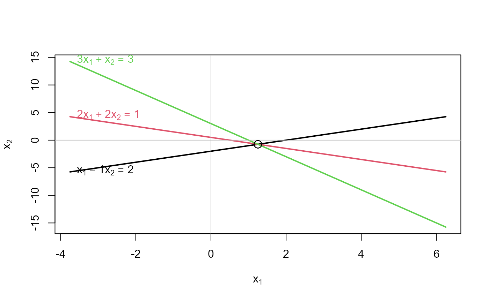

Shows what matrices \(A, b\) look like as the system of linear equations, \(A x = b\) with two unknowns, x1, x2, by plotting a line for each equation.
plotEqn(
A,
b,
vars,
xlim,
ylim,
col = 1:nrow(A),
lwd = 2,
lty = 1,
axes = TRUE,
labels = TRUE,
solution = TRUE
)Arguments
- A
either the matrix of coefficients of a system of linear equations, or the matrix
cbind(A,b). TheAmatrix must have two columns.- b
if supplied, the vector of constants on the right hand side of the equations, of length matching the number of rows of
A.- vars
a numeric or character vector of names of the variables. If supplied, the length must be equal to the number of unknowns in the equations, i.e., 2. The default is
c(expression(x[1]), expression(x[2])).- xlim
horizontal axis limits for the first variable
- ylim
vertical axis limits for the second variable; if missing,
ylimis calculated from the range of the set of equations over thexlim.- col
scalar or vector of colors for the lines, recycled as necessary
- lwd
scalar or vector of line widths for the lines, recycled as necessary
- lty
scalar or vector of line types for the lines, recycled as necessary
- axes
logical; draw horizontal and vertical axes through (0,0)?
- labels
logical, or a vector of character labels for the equations; if
TRUE, each equation is labeled using the character string resulting fromshowEqn, modified so that thexs are properly subscripted.- solution
logical; should the solution points for pairs of equations be marked?
Value
nothing; used for the side effect of making a plot
References
Fox, J. and Friendly, M. (2016). "Visualizing Simultaneous Linear Equations, Geometric Vectors, and Least-Squares Regression with the matlib Package for R". useR Conference, Stanford, CA, June 27 - June 30, 2016.
See also
Examples
# consistent equations
A<- matrix(c(1,2,3, -1, 2, 1),3,2)
b <- c(2,1,3)
showEqn(A, b)
#> 1*x1 - 1*x2 = 2
#> 2*x1 + 2*x2 = 1
#> 3*x1 + 1*x2 = 3
plotEqn(A,b)
#> x[1] - 1*x[2] = 2
#> 2*x[1] + 2*x[2] = 1
#> 3*x[1] + x[2] = 3

# inconsistent equations
b <- c(2,1,6)
showEqn(A, b)
#> 1*x1 - 1*x2 = 2
#> 2*x1 + 2*x2 = 1
#> 3*x1 + 1*x2 = 6
plotEqn(A,b)
#> x[1] - 1*x[2] = 2
#> 2*x[1] + 2*x[2] = 1
#> 3*x[1] + x[2] = 6